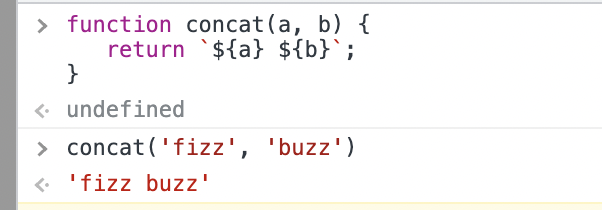
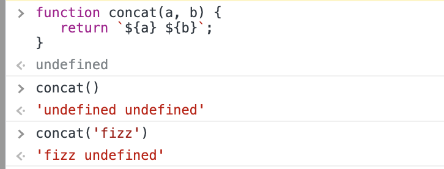
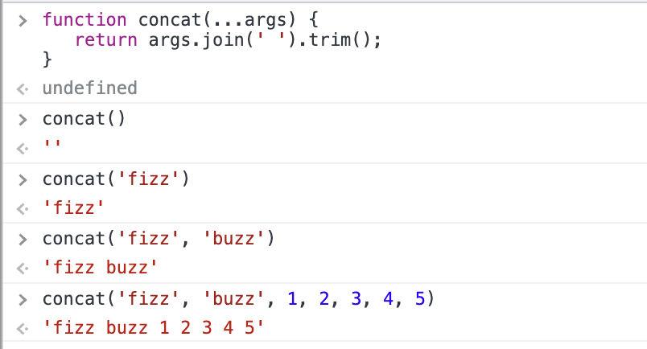
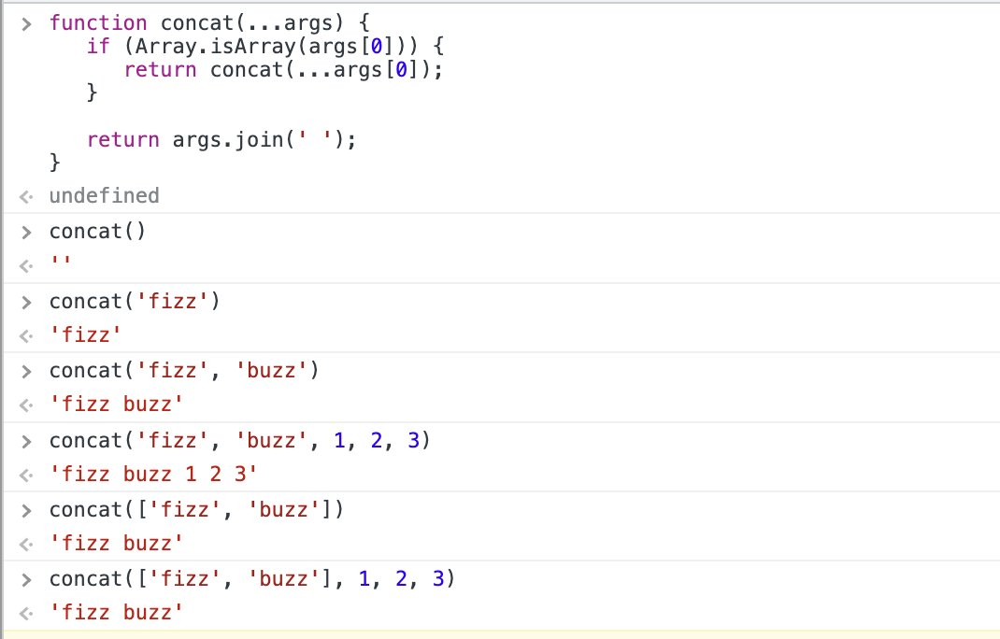
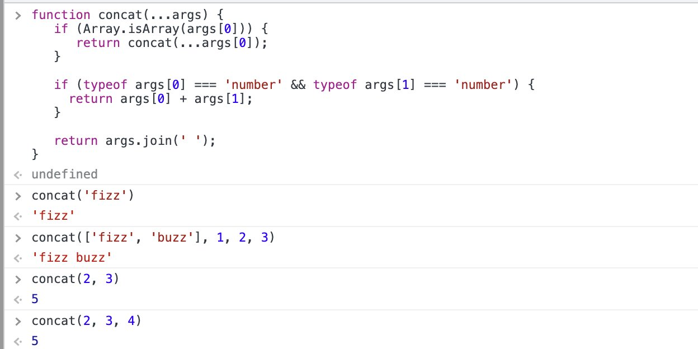

Function Overload é a tecnica de manter varias funções com o mesmo nome mas diferentes implementações.
Ela se comporta diferente dependendo de como vc chama. Em JS não podemos ter funções com o mesmo nome: a ultima declaração vai sobrepôr.
Então como fazer Overload em JS?
Para que possamos fazer overload em JS nós precisamos de umas coisas:
Bora lá:
Existem algumas maneiras de fazer isso, e eu vou mostrar algumas delas. No entanto todas baseiam-se numa mesma premissa: condicional via diferenciação de argumentos.
Nossa função vai agir de forma diferente de acordo com o tipo e/ou numero de argumentos que passamos pra ela.
Vamos fazer isso de forma escalar. Imagine a seguinte função: vc passa dois parametros, ela junta os dois e retorna em formato string:
function concat(a, b) {
return `${a} ${b}`;
}
Simples né?
Mas temos um bug: se eu não passar nenhum argumento ou passar apenas o primeiro ela me devolve `undefined` no meio da string. Sem problemas: vamos pre-inicializar os argumentos e adicionar um trim() no resultado:
function concat(a, b) {
return `${a} ${b}`.trim();
}
Deboas...
Agora imaginemos que precisamos refatorar nossa função pra que ela seja capaz de concatenar um numero infinito de parametros. Sem problemas:
function concat(...args) {
return args.join(' ').trim();
}

Mas aí alguem faz isso: concat([ 'fizz', 'buzz' ]); e obtem como resultado isso: 'fizz,buzz'.
A pessoa diz: poxa vem uns arrays do backend, eu queria poder passar um array para a concat direto tbm e ela se comportar normalmente.
Nesse caso vamos fazer um overload da implementação da função: quando receber um array como primeiro parametro faça x coisa de x maneira. As coisas ficarão um pouco teoricas:
Nossa função tem a seguinte assinatura até então:
function concat(...args: string): string
Quando dizemos que ela tbm pode ter um array como primeiro parametro, temos duas assinaturas para a mesma função, porem o mesmo output:
Nós fizemos um OVERLOAD e mexemos na Aridade da função.
Vc deve ta pensando: "overload NO QUE?". Aridade (arity) é o numero de parametros (ou operandos) que uma função leva.
Basicamente é isso: nossa função 1 tem aridade diferente da função 2 porque sofreu overload, mas elas são a "mesma" função.
Tá, mas como implementamos isso?
Assim:
function concat(...args) {
if (Array.isArray(args[0])) {
return args[1].join(' ').trim();
}
return args.join(' ').trim();
}
O que fizemos na função acima foi verificar se o primeiro parametro passado pra ela (args[0]) é do tipo array (arity check), e se for assim retornamos o concat apenas desse array e ignoramos o resto (behavior change).
E por isso temos um overload. Embora o output seja o mesmo, a assinatura e o comportamento (implementação) diferem na função de mesmo nome.
No caso da nossa função ela ainda ta meio dummy, ela repete o comportamento do output e reimplementa a logica. Podemos melhorar isso.
Quando vc ta fazendo overload mas o output não vai mudar, ao inves de criar ifs e diversos returns, pode apenas normalizar os parametros e chama a função novamente de dentro dela mesma, evitando reimplementar a mesma logica dentro de ifs. Assim:
function concat(...args) {
if (Array.isArray(args[0])) {
return concat(...args[0]);
}
return args.join(' ').trim();
}
Temos o "Overloaded Behavior" esperado sem repetição de lógica. O ...args[0] faz spread do array em forma de parametros pra mesma função:
Mas aí alguem chega e fala: Muito legal tudo isso mas eu queria que quando o primeiro e o segundo parametro fossem um numero a função retornasse a soma e não o str concat.
E daí vc manda a pessoa a merda, tira a camiseta e foge pras colinas correndo...
Brincadeira. Vc Implementa. Novamente:
Overload to the rescue!
Mas agora vc já tem mais experiencia e vai fazer isso da seguinte maneira:
function concat(...args) {
if (Array.isArray(args[0])) {
return concat(...args[0]);
}
if (typeof args[0] === 'number' && typeof args[1] === 'number') {
return args[0] + args[1];
}
return args.join(' ');
}
O que fizemos no segundo if foi dizer o seguinte: Se o primeiro e o segundo parametro são do tipo numerico, vc ignora tudo e devolve a soma dos dois.
Novamente: Function Overload. Diferentes implementações para diferentes aridades.
É isso. Após aprendermos overload, nossa função terminou com 2 outputs e 3 assinaturas:
Exemplos meramente ilustrativos, claro. Bons estudos!